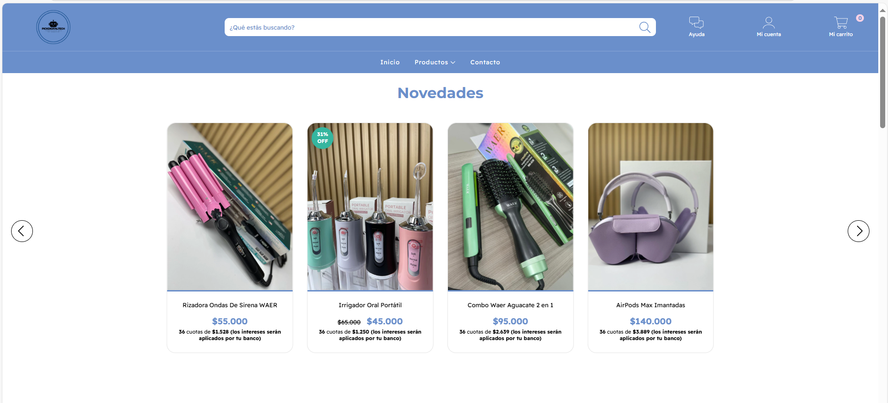

Proyectos Destacados
Sistema de Riego Automático
Proyecto con Arduino y sensor de humedad que controla el riego de plantas de forma inteligente. Programado en C++.

Robot Seguidor de Línea
Robot autónomo capaz de seguir un camino marcado en el suelo utilizando sensores y C++.

Página web PickDigitalTech
Desarrollo web profesional para la marca PickDigitalTech, combinando diseño moderno y usabilidad.
